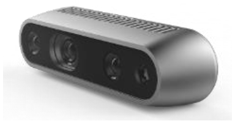
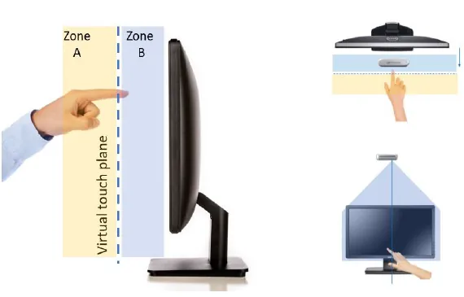
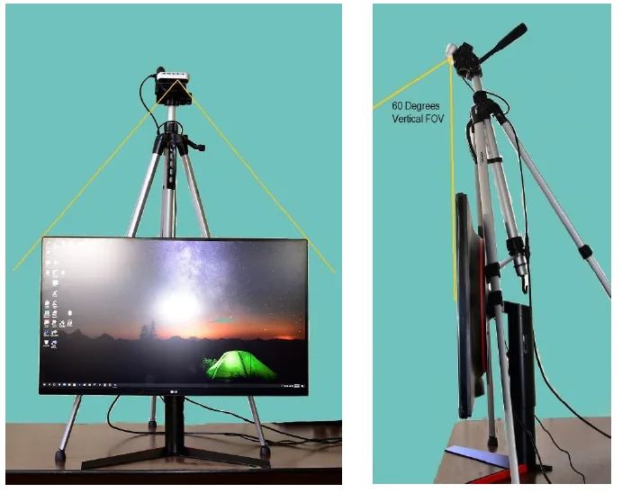

非接触でのクリック検知
仮想タッチ平面を通過する指の動きを検知できることを確認しました。
画面前方に仮想的な「タッチ平面（Virtual touch plane）」を設定し、指がその面を通過したことを検知することでクリック（タッチ）動作として認識する仕組みを検証しました。
カメラの垂直視野角を活かし、画面全体をカバーするエリア（Zone A/B）を設計しています。

※参考構成図：仮想タッチ平面による検知イメージ
Intel RealSense D435iは、深度（距離）情報を取得できるカメラです。指先の位置や動きを空間的に認識できるため、非接触でのタッチ操作の代替手段として検証しました。
カメラを画面上部に設置し、垂直画角60度を確保する角度・距離を調整しながら検証環境を構築しました。

使用した深度カメラ

※参考構成：カメラ設置・画角調整の様子
実際に非接触操作を行った検証の様子を動画で紹介しています。
仮想タッチ平面を通過する指の動きを検知できることを確認しました。
特別なタッチパネルディスプレイを使わずに導入できる構成を検証しました。
カメラの画角・距離に応じて、操作範囲を調整できることを確認しました。
触れずに操作したい場面への活用を想定しています。
医療・食品関連施設など、非接触での操作が求められる場面への活用を想定しています。
不特定多数が触れるタッチパネルの代替としての活用を想定しています。
非接触での操作案内への応用を検討できます。
触れずに情報を閲覧できる展示演出への応用を検討できます。